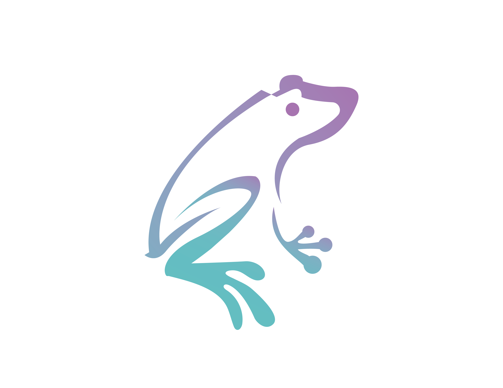

Niveles de dificultad
Si es tu primera vez navegando la biblioteca, probablemente no estés muy seguro de dónde comenzar. Debido a la manera en la que se entrena en las Olimpiadas de Matemáticas de Guanajuato, los temas de los entrenamientos se han clasificado de la siguiente manera:
- Básico
- Denominamos nivel básico a los temas que se pueden estudiar sin entrenamientos previos. Son los temas "base" de cada una de las ramas.
- Intermedio
- Una vez dominados los temas básicos, los temas intermedios son el siguiente paso. No se recomienda que los participantes inexpertos se adentren en los temas intermedios inmediatamente.
- Avanzado
- Los temas avanzados pueden presentar un verdadero reto. La mayoría de estos temas están reservados para entrenamientos de OMM (más adelante se explicará lo que esto significa) por lo que los participantes de primaria y secundaria no deben preocuparse por dominar estos temas aún.
- Muy avanzados
- Se trata de temas que se tratan en entrenamientos nacionales. Se recomienda contar con un entrenador con experiencia al trabajar estos temas.
Diferentes Olimpiadas, diferente dificultad
Gracias a las valiosas contribuciones de los entrenadores y coordinadores de la Olimpiada Mexicana de Matemáticas en Guanajuato (OMMGto) y de la Olimpiada Femenil de Matemáticas en Guanajuato (OFMGto), contamos con entrenamientos de su nivel. Si te encuentras explorando entrenamientos, te recomendamos considerar lo siguiente:
-
 Los entrenamientos con el logo de la OBM se escribieron para ser utilizados por participantes de primaria y secundaria.
Los entrenamientos con el logo de la OBM se escribieron para ser utilizados por participantes de primaria y secundaria. -
 Los entrenamientos con el logo de la OMMGto se escribieron pensando en participantes de preparatoria y, en menor grado, secundaria.
Los entrenamientos con el logo de la OMMGto se escribieron pensando en participantes de preparatoria y, en menor grado, secundaria. -
Los entrenamientos con el logo de la Olimpiada Femenil de Matemáticas en Guanajuato se escribieron pensando en alumnas de secundaria y preparatoria.
Para otras olimpiadas y otras portadas, los niveles de dificultad pueden ser un mejor indicador del público al que se encuentran adecuados.